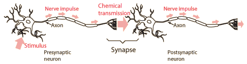

Chemical Neurotransmitters
| Groups | Neurotransmitter | Function |
| Acetylcholine | Acetylcholine | Excitatory |
| Amines | Epinephrine | Excitatory |
| Norephinephrine | Excitatory |
| Dopamine | Excitatory and Inhibitory |
| Serotonin | Excitatory |
| Amino Acids | Glutamate | Excitatory |
| Glycine | Mainly inhibitory |
| g-Aminobutiric acid (GABA) | Inhibitory |
Data source: http://ifcsun1.ifisiol.unam.mx/Brain/trnsmt.htm

The nerve cells which are used for the perception of external events will, upon being excited by the proper stimulus, transmit an action potential down their axons. When the electrical signal reaches the axon terminal bundle, it interacts with structures called synaptic knobs. It stimulates an influx of calcium (Ca2+) through voltage-gated Ca2+ gates. This caused the movement of vescicles toward the membranes of the synaptic knobs. Inside these vescicles are neurotransmitter chemicals. The neurotransmitters are manufactured in the cell body and travel down t he axon to be stored in vescicles associated with the synaptic knobs. When a vesicle reaches the cell membrane of the synaptic knob, it fuses with the cell membrane and releases its neurotransmitter into the synaptic region. On the postsynaptic neuron are receptors that will specifically bind these neuotransmitters. The neurotransmitter will either excite or inhibit the firing of the postsynaptic neuron.
One mechanism for inhibition of the firing of the post-synaptic neuron is to cause hyperpolarization like that which follows the pulse of an action potential. This would raise the threshold for firing of the neuron.
Note that the pre- and post-synaptic neurons have been drawn identically above, but that is just out of ignorance of what the structural differences are.
Contributing author: Ka Xiong Charand
|